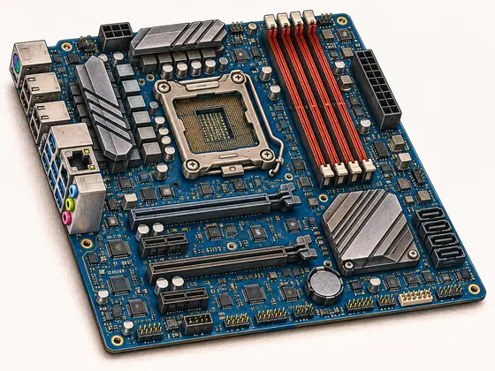
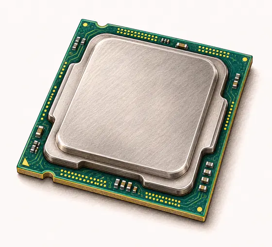
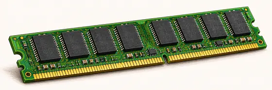
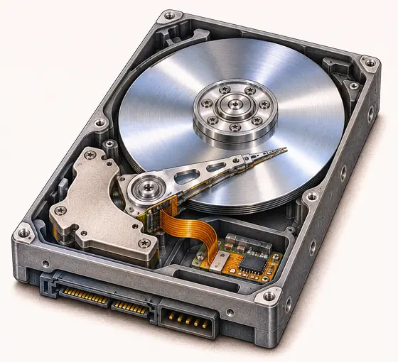
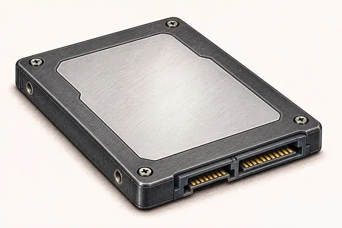
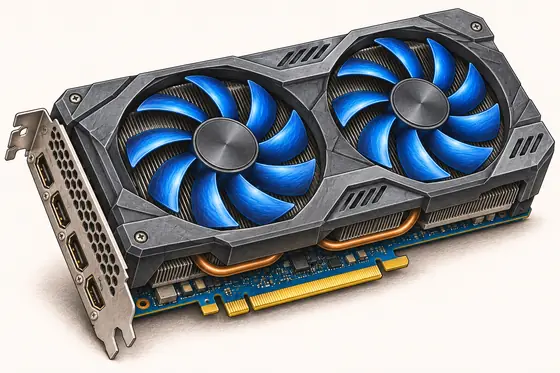
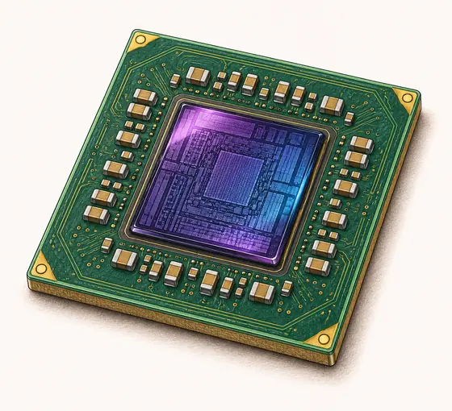
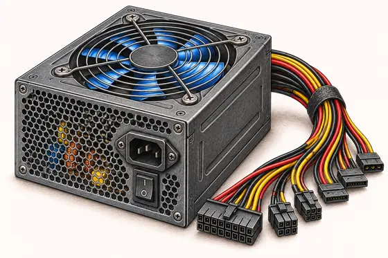

Pagrindinė plokštė
kaip nervų sistemaDidžiausia plokštė kompiuterio viduje. Prie jos jungiamos visos kitos dalys, o plonais takeliais ji perduoda signalus tarp jų.
infopamokos.lt 7–8 klasės
Pamokų medžiaga: tikslai, trumpi paaiškinimai ir interaktyvios užduotys. Medžiaga pildoma. Pasirinkite klasę.
2.1.1. Aparatinė įranga: kompiuterio „kūnas“
Aparatinė įranga – tai visos kompiuterio dalys, kurias galima paliesti: plokštės, lustai, diskai, laidai. Programos, kurios kompiuteryje veikia, vadinamos programine įranga.
Aparatinė įranga – tarsi kompiuterio „kūnas“. Kaip žmogaus kūnas turi smegenis, atmintį ir akis, taip ir kompiuteris turi dalis, kurių kiekviena atlieka savo darbą. Be jų jokia programa neveiktų.

Didžiausia plokštė kompiuterio viduje. Prie jos jungiamos visos kitos dalys, o plonais takeliais ji perduoda signalus tarp jų.

Atlieka skaičiavimus ir vykdo programas. Kuo galingesnis procesorius, tuo greičiau kompiuteris atlieka užduotis.

Laiko tai, su kuo kompiuteris dirba dabar: atidarytas programas, žaidimą. Išjungus kompiuterį, OA išsivalo.

Saugo operacinę sistemą, programas ir failus net išjungus kompiuterį. Viduje sukasi magnetinė plokštelė, todėl jis lėtesnis.

Taip pat saugo duomenis ilgam, bet neturi judančių dalių – duomenys laikomi lustuose. Todėl SSD daug greitesnis už HDD.


Kuria vaizdą ir siunčia jį į monitorių. Svarbiausia jos dalis – vaizdo procesorius GPU, paslėptas po ventiliatoriais.

Elektros srovę iš lizdo paverčia tokia, kokios reikia kompiuterio dalims, ir laidais tiekia energiją joms visoms.
Dirbdamos dalys įkaista. Ventiliatoriai įpučia vėsaus oro ir išpučia šiltą, kad kompiuteris neperkaistų.
Žaidime matysi atidarytą kompiuterio korpusą. Spausk ant dalių ir sužinok, kaip jos vadinasi ir ką daro. Žaidimas turi tris režimus:
Radęs visas dalis, įjunk kompiuterį ir pažiūrėk, kaip jis veikia.
Pirmas žaidimas mokė atpažinti kompiuterio dalis, o šis padės suprasti, ką kiekviena jų daro. Išklausyk „paciento“ skundą, ištirk kompiuterį diagnostikos įrankiais, nustatyk, kuri dalis sugedo, ir pasirink, kaip ją „išgydyti“.
12 klausimų apie kompiuterio vidaus dalis. Po kiekvieno atsakymo iškart pamatysi, ar teisingai, ir paaiškinimą.